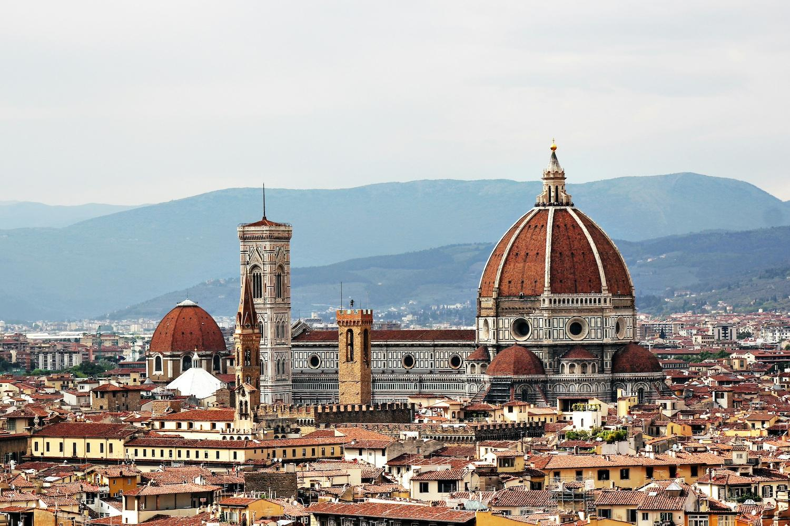

<!DOCTYPE html>
<html lang="en">
    <head>
    <meta charset="UTF-8">
    <link rel="stylesheet" href="Italy.css">
    <link rel="stylesheet" href="Itnav.css">
    <link rel="stylesheet" href="../footer.css">
    <title>test</title>
    </head>
</html>
<body>
            <!-- Navbar -->
            <nav class="navbar">
                <a href="../home page.html" class="logo-link">
                    <div class="logo"></div>
                </a>
                <div class="navbar-background"></div>
                <ul class="nav-links">
                    <li><a href="../home page.html">Home</a></li>
                    <li><a href="#destinations">Destinations</a></li>
                    <li><a href="#index">index</a></li>
                    <li><a href="../about us/Untitled-3.html">About Us</a></li>
                    <li><a href="../Contact us/contact.html" style="padding:0 ;"><button class="button">Contact us</button></a></li>
                    <li><a href="../login1/login (1).html" style="padding: 0%;"><button class="button login">LOG IN</button></a></li>
                </ul>
                <span>&#9776;</span>
            </nav>
    
    <section class="container">
        <div class="slider-wrapper">
            <div class="slider">
                
                
                
            </div>
            <div class="slider-nav">
                <a href="#slide-1"></a>
                <a href="#slide-2"></a>
                <a href="#slide-3"></a>
            </div>
        </div>
    </section> 
            <h1> Best Places to Visit in Italy</h1>
         <div class = "place"> 
            <div class="text"> <span class="footer" ></span>
                <span class="text-header">Florence</span>Florence, the capital of Italy's Tuscany region, is often regarded as the birthplace of the Renaissance and is renowned for its art, architecture, and cultural history. Highlights include the magnificent Florence Cathedral (Duomo), Michelangelo’s David at the Accademia Gallery, and the world-class Uffizi Gallery with works by Leonardo da Vinci and Botticelli. Its blend of artistic heritage and vibrant atmosphere makes Florence a must-visit for travelers.  </div>
            <div class="pic1"> </div> 
            <a class="location" href="https://maps.app.goo.gl/bEfCEXEBRKoT53BMA"> </a>
        </div>

        <div class = "place"> 
            <div class="text2"><span class="footer" ></span> <span class="text-header" >The Colosseum</span> The Colosseum, built around 70-80 AD, is one of the New Seven Wonders of the World. It could hold up to 80,000 spectators who gathered to watch public spectacles. Despite damage from earthquakes and stone robbers over centuries, it remains remarkably well-preserved. As a UNESCO World Heritage site, it’s one of Italy's top tourist attractions, symbolizing the grandeur of Roman engineering and culture. </div>
            <div class="pic2"> </div> 
            <a class="location2" href="https://maps.app.goo.gl/bNfXdDFbY5r7XyfMA"> </a>
        </div>

        <div class = "place"> 
            <div class="text"><span class="footer" ></span> <span class="text-header">The Amalfi Coast</span>  The Amalfi Coast, a UNESCO World Heritage site in southern Italy, is famous for its stunning cliffs, turquoise waters, and colorful cliffside villages. Stretching about 50 kilometers along the Sorrentine Peninsula, it includes picturesque towns like Positano, Amalfi, and Ravello. Known for its lemon groves, scenic drives, and Mediterranean beaches, the coast also offers excellent hiking.  </div>
            <div class="pic3"> </div> 
            <a class="location3" href="https://maps.app.goo.gl/jR4m96FpjNZLwabF7"> </a>
        </div>
        <div class = "place"> 
            <div class="text2"><span class="footer" ></span> <span class="text-header">Lake Como</span>Lake Como, located in northern Italy’s Lombardy region, is renowned for its deep blue waters and stunning Alpine backdrop. Shaped like an inverted "Y," it is dotted with elegant villas, lush gardens, and charming lakeside towns like Bellagio, Varenna, and Menaggio. It offers scenic boat rides, hiking trails, and beautiful villas to explore, such as Villa del Balbianello.   </div>
            <div class="pic"> </div> 
            <a class="location3" href="https://maps.app.goo.gl/jR4m96FpjNZLwabF7"> </a>
        </div>
        <div id="index" ><span class="index"></span></div>

        <div class="black-box" style="z-index: 99;" >
            <span id="destinations" class="pipeline1" ></span>
            <div class="blackbox-child" >
                <a href="../france\france.html" class="france0"></a>
                <a href="../china with andaleeb\china.html" class="china0"></a>
                <a href="../webpage1/Japan.html" class="japan0"></a>
                <a href="../egypt/egypt.html" class="egypt0"></a>
                <a href="../Australia/Australia.html" class="australia0"></a>
                <a href="../Italy\Italy.html" class="italy0"></a>
                <a href="../index.html" class="germany0"></a>
                <a href="../Uk/Untitled-1.html" class="uk0"></a>
                <a href="../Turkey/Turkey.html" class="Turkey0"></a>
                <a href="../Untitled-1.html" class="russia0"></a>
            </div>
            <div class="blackbox-child2" >
                <p>@2024 Travel Guide by Websmiths. All rights reserved</p>
            </div>
          </div>
</body>